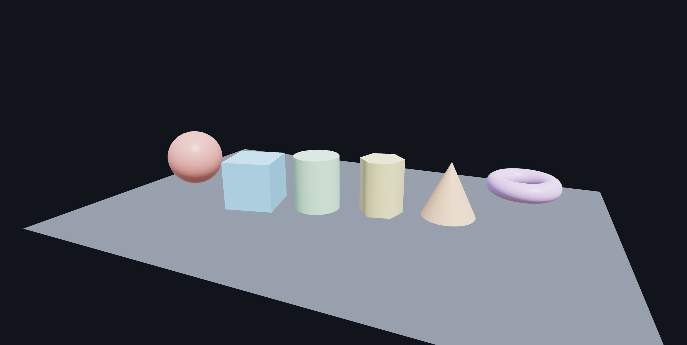
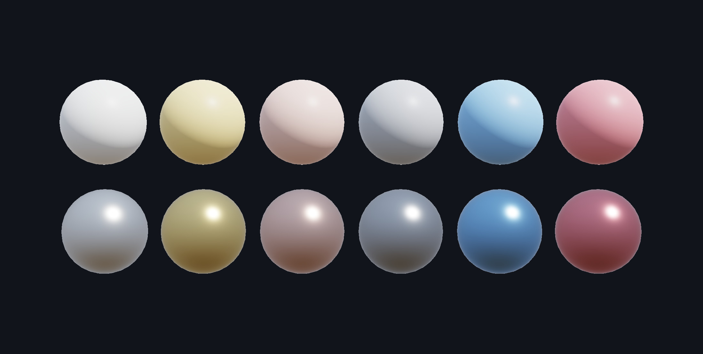
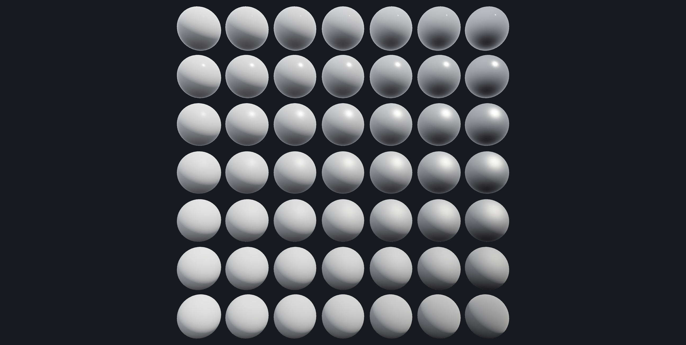
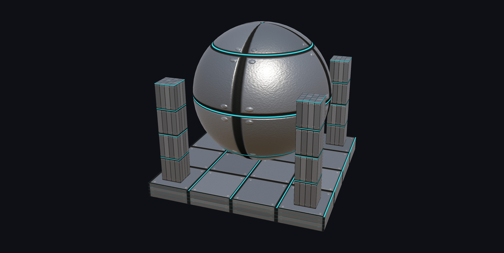
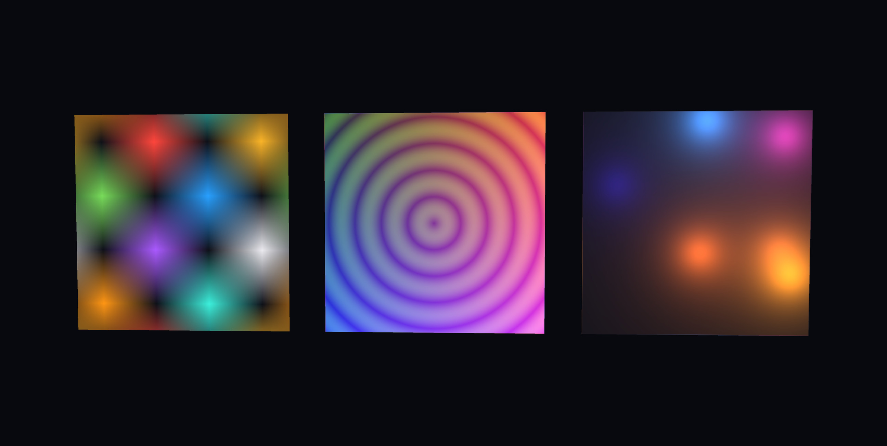
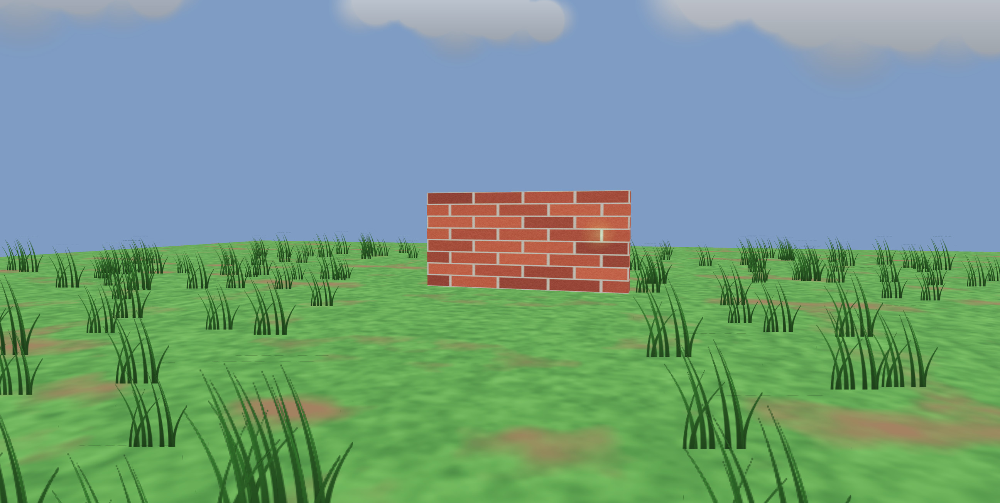
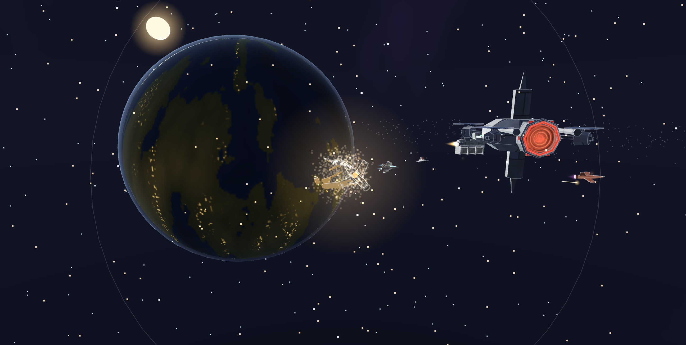
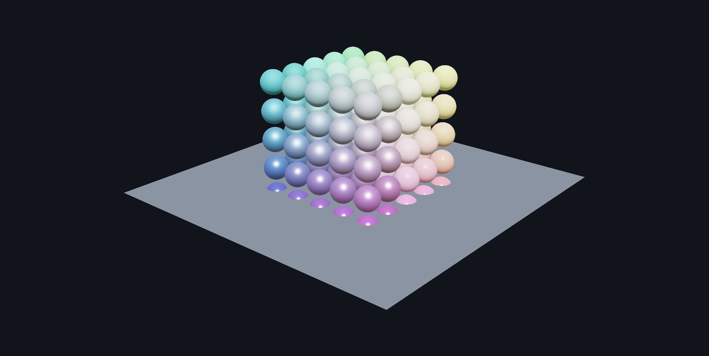
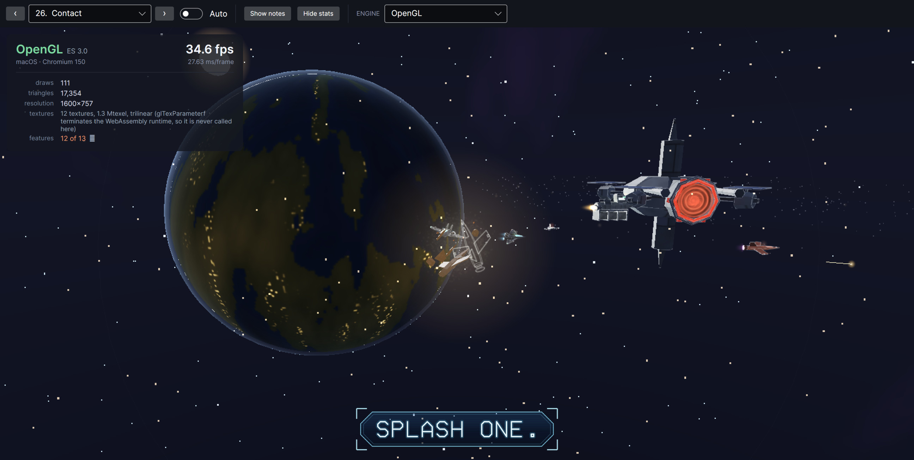

A 3D viewport for Avalonia that actually works everywhere.
Metallic-roughness PBR, glTF loading and triangle-accurate picking, in one control that renders through
Metal on a Mac, OpenGL on Windows and Linux, WebGL 2 in a browser tab, and the CPU when a host offers no
GPU at all — chosen at runtime, from the same binary.
Install the packagedotnet add package Ava3DControl --prerelease
Download the demogit clone https://github.com/pavel-zheltiakov/Ava3DControl.git
This is a beta.12.1.0-preview.2 is a NuGet prerelease, which is why the
flag is there. Everything below was measured on the code you would install; the suffix is there because
the API may still move in response to the first people to use it.
Behind the title: one frame of Contact, the sixty-second film the demo ships with, darkened so the
words sit on it. Nothing else was done to it. The scenes are further down.
The story, in eleven pictures

1 · It is a control, not a window
Four lines to a lit, orbitable scene: a mesh, a material, a node, done. It composites like any
other Avalonia control — clipping, opacity, z-order and transforms all behave, because it draws
into its own framebuffer and hands Skia an image rather than punching a hole through the window.

2 · Metals are not just shiny plastic
The same six colours twice. Above, Metallic = 0: the colour is diffuse albedo and the
highlight is white. Below, Metallic = 1: no diffuse term at all, so the colour has
become the tint of the reflection. That is why the gold reads as gold, and why a metal in an empty
room reads as black.

3 · The chart every PBR renderer should be able to draw
Metallic across, roughness down, one base colour, no textures. Read the corners: polished plastic,
near-mirror metal, chalk, brushed steel. The reflected horizon blurring away down the right-hand
column is the roughness axis — GGX with height-correlated Smith visibility and Schlick
Fresnel, the same arithmetic on all three renderers.

4 · Five texture channels, no asset pipeline
Base colour, metallic-roughness, normal, emissive and occlusion — all generated in about two
hundred lines from one height field, which is why the plates, the grooves and the rivets agree with
each other. The cyan seams stay lit as they rotate into shadow; the rivets are shading, not
geometry, and the silhouette proves it.

5 · A texture is an array of numbers
Left is sixteen pixels — sixty-four bytes of RGBA written as a literal and handed to
Texture.FromPixels. Middle is 256×256 filled in a loop. Right is thrown away and
rebuilt from a new seed every second and a half, and the demo prints what each rebuild cost. The
alternative is encoding a PNG in your own application so the renderer can immediately decode it
again, which for four 1024×512 maps is over a second of stall in a WebAssembly heap.
6 · Somebody else's model, exactly as it shipped
A CC0 camera from Poly Haven, modelled in Blender and baked to maps years before this renderer
existed: packed metallic-roughness with occlusion in the red channel, OpenGL-convention normal
maps, separate materials for body, lens and strap, and a node hierarchy that exists for rigging
reasons. GltfLoader.Load(bytes) maps all of it onto Material and leaves
the hierarchy alone. Exporters omit tangents unless asked, so the loader derives them — otherwise
every normal map in the wild would be quietly ignored.

7 · Grass, cloud and a wall, out of quads
Two hundred and forty tufts and eight clouds, each one a SpriteNode — a quad that
turns to face the camera. A field of grass as geometry is millions of triangles for something you
only read as a shape; as sprites it is 240 four-vertex draws, and the alpha edge stays sharp where
geometry that thin would be eaten by the depth buffer. Size is in world units, so the far tufts
shrink like everything else. Behind the wall are two lamps: the depth-tested one disappears, the
one with DepthTest = false never does.

8 · Everything that is not a lit triangle
One frame of Contact, a sixty-second film in the demo. The stars are 1,660 points held at
two pixels each however far the sphere they sit on actually is. The panel lines are line segments
over the hulls; the glows, the fireball and the tracers are camera-facing sprites — the ships'
transponders draw over their own geometry, which is what keeps a hull visible once it is
a pixel wide. The debris is a point cloud scaled outward and the shockwave is a line ring, because
nothing here moves a vertex: every effect is a transform. The planet's cities are an emissive map
masked to its night side and the halo is a shell with a Fresnel rim. The sun is nine hundred
thousand units out and the near plane is at 5.

9 · 128,002 triangles, 126 draw calls, 120 fps
One Mesh instance on 125 nodes. GPU buffers are cached against mesh identity, so it
uploads once and draws 125 times. Rewrite the vertices and call InvalidateGeometry()
and it refills that one buffer instead. This is the scene behind every number in the table below,
and it ships in the demo so you can re-measure it.

10 · The same code in a browser tab
The film, in Chrome, on WebGL 2 — 111 draws and 17,354 triangles a frame with no plugin and no
separate build of the renderer. It goes through Avalonia's SkiaSharp graphics lease rather than
OpenGlControlBase, which does not exist on the web platform. Twelve of thirteen
features: the missing one is anisotropic filtering, whose entry point terminates the WebAssembly
runtime, and the panel says so rather than quietly dropping it.
Run it yourself →
11 · And a picture even with no GPU at all
The fourth slide's scene again, in a window with no GPU context: the same PBR arithmetic per
vertex instead of per pixel, through Skia's DrawVertices. It is slower, it has no
depth buffer, and it can carry only the base-colour map — four of thirteen features, all of which
it tells you in RenderInfo. What it does not do is show nothing.
How it works, in one picture
You build a scene — nodes, meshes, materials, a camera — and change it whenever you like. Once a frame
Avalonia takes an immutable copy of it, hands that to whichever renderer this machine can actually give,
and gets back a picture it composites like any other control.
Two things fall out of that picture. The renderer is picked at startup from what the host can give, so the
same binary is Metal on a Mac and WebGL 2 in a browser tab and you write neither. And because what crosses
back is a picture rather than a native child surface, clipping, opacity, z-order and transforms all behave
— by the time the compositor sees the 3D, it is already pixels.
Never written 3D code before? The 3D Guide is a book: eight chapters that start at
what a triangle is and end at what a frame costs, teaching the subject and using this API as the worked
example. Terms in the reference link into it.
Start reading →
What you get
The renderer is a runtime decision
A control library does not get to choose its host's graphics API, so this one asks. Metal, OpenGL or
the CPU, decided from what the graphics lease returns — and reported, with a reason, for every option
the platform cannot offer.
Metallic-roughness PBR
The glTF 2.0 model, with an analytic sky-and-ground environment so metals have something to reflect
without shipping a cubemap. Base colour, metallic-roughness, normal, emissive and occlusion maps.
Picking against triangles
Möller–Trumbore, rejected first by each node's bounding box. Geometry rather than pixels, so it works
identically on the GPU, on the CPU and in a browser where reading a pixel means a round trip.
A scene graph, not a mesh list
Nodes carry transforms and inherit their parents', so a CAD assembly stays one draw call per part and
identical geometry shares one upload. Mutate it freely on the UI thread; the control coalesces changes
into one immutable snapshot per frame.
Textures that fit in a WASM heap
Images stay encoded until a renderer wants them, then decode and upload two per frame. A scene appears
immediately and fills in, instead of allocating a hundred megabytes of RGBA before the first frame.
Freeware, including commercially
No fee, no seat count, no registration, no attribution requirement in your application. Ship it inside
something you sell. The demo's source is yours to copy outright.
Measured, not estimated
All five figures are the same scene: 128,002 triangles in 126 draw calls, the "Stress test" scene in the
demo. Reproduce them by opening that scene and reading the counter — and in a browser, by adding
?scene=stress to the URL.
Platform
Renderer
Frames per second
Note
macOS, Apple M3 Max
Metal
119.9
Avalonia's default on macOS
macOS, Apple M3 Max
OpenGL 4.1
120.4
host started in OpenGL mode
Chrome, WebAssembly
WebGL 2
120.0
same binary, no plugin
iOS 26.5 simulator
Metal
60.1
vsync-capped at 60
macOS, Apple M3 Max
Skia, CPU
24.2
the fallback, on one core
The first four are frame-rate limited rather than GPU limited — the renderer is waiting for the display,
not the other way round. The CPU figure is the honest one: it is what a Vulkan or software host gets, and
the reason the GPU paths exist.
Quick start
1 · Add the package
dotnet add package Ava3DControl --prerelease
The flag is required while this is a preview. Pin 12.1.0-preview.2 exactly if you would
rather nothing moved under you.
var scene = new Scene();
scene.Children.Add(new MeshNode(
Primitives.Sphere(0.5f),
new Material
{
BaseColor = new Vector4(1f, 0.77f, 0.34f, 1f),
Metallic = 1f,
Roughness = 0.25f
}));
View.Scene = scene;
That is the whole thing. The camera frames the scene by itself, orbit, pan and zoom are already wired
up, and the renderer is whichever one the platform can actually give you.
Without it the WebAssembly runtime aborts with no exception and no message when the renderer makes its
first GL call: the P/Invoke trampolines for functions taking several floats are generated at native link
time, and that link only happens when this is set.
What it does not do
A short list is worth more than a long one you have to discover for yourself.
No shadows. One directional light plus an environment, forward-shaded, single pass.
No image-based lighting. The environment is an analytic two-colour hemisphere, so a
mirror reflects a smooth gradient rather than a room. It needs no assets and runs on a phone.
No animation or skinning. glTF node transforms are read; animation channels are not.
No transparency sorting. Alpha masking works; blended transparency is not ordered.
Only binary glTF. A multi-file .gltf needs a URI resolver the browser
makes awkward. Pack it to a .glb first.
Android is not verified. The head builds and the GL path is the same one the browser
uses, but nobody has run it on a device yet, and an unverified claim is not a feature.
OpenGL on iOS renders nothing. An upstream defect in Avalonia's iOS GL surface, not a
device limit. Metal is the working GPU path there and the control picks it automatically.